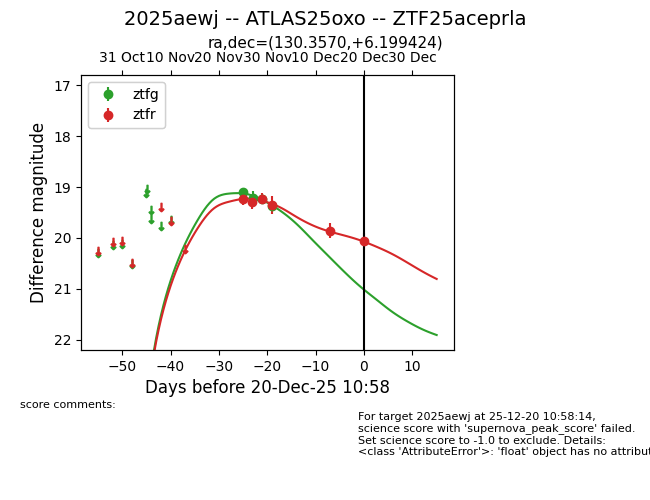
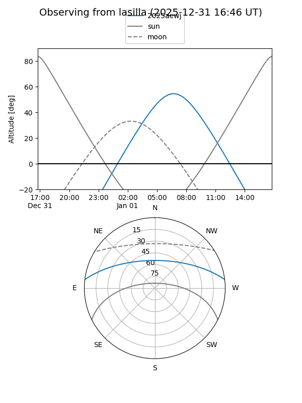
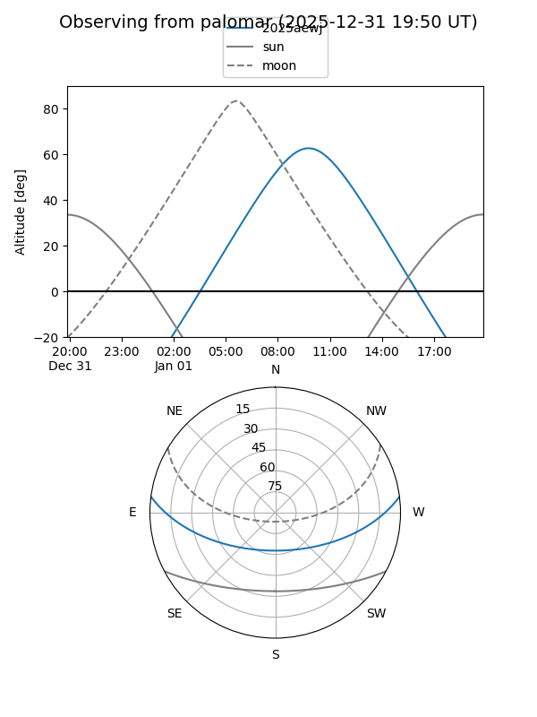
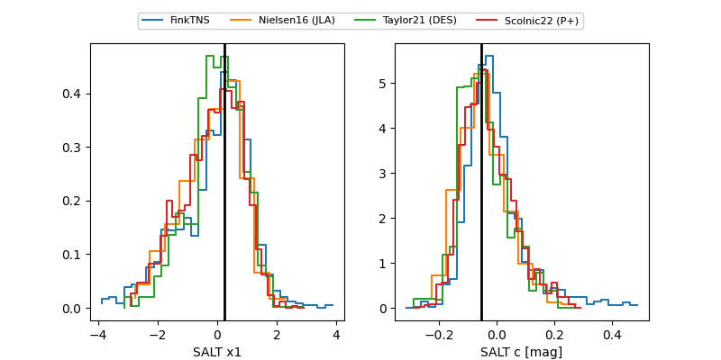

2025aewj
Target 2025aewj at 2025-12-31 17:00
Aliases and brokers:
FINK:
Lasair:
ALeRCE:
TNS:
YSE:
alt names
ZTF25aceprla (ztf,fink_ztf)
2025aewj (tns,yse)
ATLAS25oxo (atlas)
Coordinates:
equatorial (ra, dec) = 130.3570,+6.19942
equatorial (HMS+DMS) = 08:41:25.68,+06:11:57.93
galactic (l, b) = (220.2463,+27.24235)
Flags:
Photometry:
last ztfg=19.38, ztfr=20.07
4 ztfg, 6 ztfr detections
Lightcurve

Visibility


Additional plots
